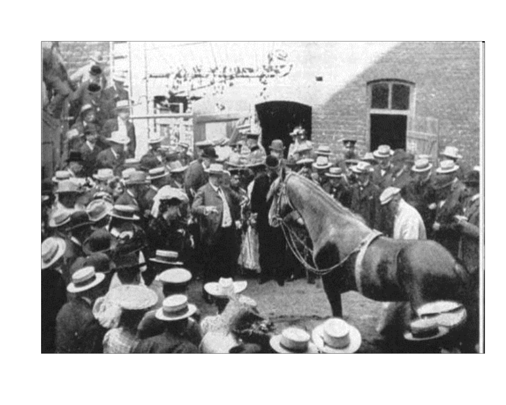
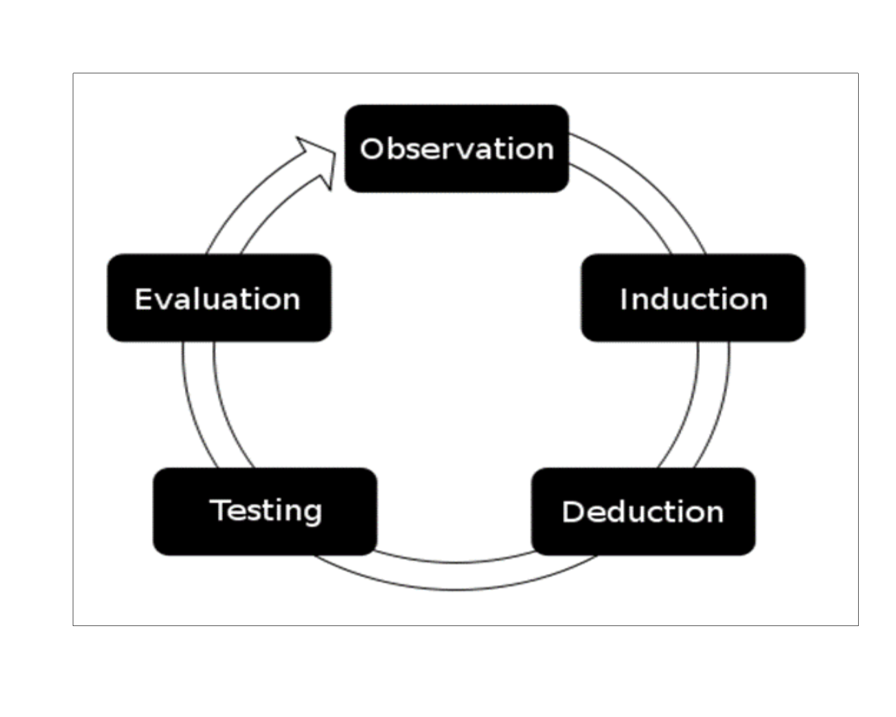

The Basics of Quantitative Reasoning: Introdutcion
UQ SLC Digital Team
January 2019
1 Introduction
This chapter takes a philosophical or history-of-ideas approach and serves to introduce students to the scientific method. To elaborate, the section outlines why humans are need science and demonstrates with various examples that are not restricted to linguistics that humans are prone to cognitive biases, logical fallacies (e.g. argument ad personam, strawman arguments, post-hoc-ergo propter hoc, argument from popularity), and inappropriate ways of dealing with data (cherry-picking) which are likely to lead to inaccurate conclusions. For example, humans are good (maybe too good) at seeing patterns but not good at understanding randomness. This is the basis for seeing faces in random patterns like the famous face on Mars. The explanation for the human inability to see the world as it is based on evolutionary approaches to our cognitive apparatus. It will be shown using the example of Clever Hans (a horse that was thought to be able to count and perform mathematical operations) that these biases can only be avoided if one applies a methodological approach to acquiring knowledge.
1.1 Why do we need science?
Before delving deeper into questions relating to defining features or characteristics of science, it is important to understand why we need science in the first place. Let us start out with a very simple and preliminary definition of science as a methodological process used to acquire knowledge about the world based on empirical evidence.
One could argue that we do not need science as we can understand the workings of the world around us not by evidence but by meditating. This is not as trivial as it may sound as this is a valid way of acquiring knowledge in what is called formal sciences such as logic or mathematics. Formal sciences start out with axioms and enlarge knowledge by applying logical operations to statements. Using a logical operation called inference, we can prove that, given certain statements (premises) are true, a derived statement (conclusion) follows with necessity and thus must also be true. For instance, if the statement “Socrates is a human being.” (premise 1) and the “All humans are mortal.” (premise 2) are both true, then we can infer that the statement “Socrates is mortal.” (conclusion) must also be true. Once a given statement (conclusion) is proven to be true, then this conclusion can itself be used as a premise to arrive at new true statements. Formal sciences are extremely powerful when it comes to determining the logically coherence. In other words, formal sciences can be used to construct logically coherent representations of the world around us.
Unfortunately, this procedure to acquire knowledge does not tell us whether the statement “I will raise my left arm once I have counted to three.” or the statement “I will raise my right arm once I have counted to three.” is true. Both options are equally possible and a world in which I raise my left arm is just as logically coherent as a world in which I raised my right arm. As a consequence, we need empirical evidence to determine whether statement (as a side note: I only counted to two and raised neither of my arms). The problem here is that there is potentially an infinite number of possible number of logically coherent worlds and in order to determine which of these potential worlds is the world we live in (given that our world is logically coherent which I often doubt). In other words, we need empirical evidence to determine the workings of the world around us.
1.2 Cognitive Bias(es)
All of the above indicates that we need empirical evidence to determine the rules and laws governing empirical realiyt but it does not tell us why we need science. As we have established above, only empirical evidence can lead the way to determining what the characteristics of the world we live in are. Science comes in as we, as human beings, are not very good at seeing and understanding the world as it is (in fact, we are not able to do so!). To elaborate, when it comes things we are scared of, we rather rely on emotional narratives rather than things that really do us harm. For instance, we are more scared of what is sometimes referred to as stranger danger, i.e. that someone unknown will harm us or people dear to us than people we know while most murders and sexual exploits are committed by people we know such as our family and friends. Another example would be represented by the movie Jaws while mosquitoes or even cows kill more people (mosquitoes are in fact the most dangerous animal for humans due to the diseases they transmit).
Beside being more strongly influenced by emotional narratives there are other in-build biases such as our drive to stick to opinions rather than correcting them or switching sides once these are proven incorrect. In other words, we seek confirmation for our believes rather than challenging them. For example,
1.3 The Monty Hall Problem
Another reason why we need science, i.e. a methodological approach to evaluating evidence, is that we are simply bad with numbers. Take the famous Monty Hall example: Monty Hall the host of the TV game show “Let’s make a deal” in which every participant was given the choice between three doors - behind two of them there was a goat while the other door hid a prize. Every participant would choose one of three doors. After the participant had chosen a door, Monty Hall would show the participant a goat behind one of the doors not chosen by the participant and would then offer the participant the option to switch doors (to the other door not initially selected). Now, what do you think - should you switch doors at that point or doesn’t make a difference?
What do you think? Well, in fact, you should switch doors and it does make a difference but it is really difficult for us humans to wrap our head around it. However, the chances of winning the prize actually increase when you switch (you can check it out yourselves when you go to this website which simulates many scenarios and confirms that after switching your chance of winning increases to 2 in 3. Why? Initially, all three dorrs had a chance of 1 in 3 of hiding the prize. When you chose your door initially, you thus had a 1 in 3 chance of winning the prize while the other doors together had a 2 in 3 chance of winning. When Monty Hall opens one door (he will always open a door behind which there is a goat), the 2 in 3 chance concentrate on the door that is left unopened. To make it clearer: Image, Monty Hall gave you 100 doors to choose from. You pick one (with a 1 in 100 chance of winning) while the other 99 doors combined have a 99 out of a hundred chance to win. Next, Monty Hall opens 98 out of the 99 doors you have not initially selected and asks you whether you want to switch to the one unopened door. You would definitely switch as, in this case, it is more intuitive for us to see that the chances of winning concentrate on the door that Monty leaves unopened.
1.4 Fast and Slow Thinking
A similar point can be made by another example: Assume that a ball and a bat together cost 1.10 AUD. The bat costs 1 AUD more than the ball. What does the ball cost?
Most students initially think that the ball costs 10 cents but this is not the correct answer. Do you know why? Well, if the ball costs 10 cents and the bat costs 1 AUD more, then the bat would cost 1.10 AUD and both together would cost 1.20 AUD and not 1.10 AUD. The correct answer is of course 5 cents (0.05 AUD + 1.05AUD = 1.10 AUD).
According to the psychologist Daniel Kahnemann, one possible explanation for this bias is that humans have two different ways of thinking: fast thinking which is very intuitive and quick and slow thinking which takes longer and is more deliberate. While fast thinking is typically a very economic way to decide, slow and deliberate is more precise but more “expensive” as it takes more time and effort. Science is essentially a method to approach problems, that we would normally use fast thinking to resolve, with slow and deliberate thought.
1.5 Cognitive Bias
A very powerful cognitive bias that underlies superstitious beliefs or behaviors is that we are very bad at dealing with randomness. In other words, we are prone to see causes or patterns although their may be none. An experiment involving pigeon performed by the psychologist B. F. Skinner. Skinner provided pigeon at random intervals with food pallets. After a while, Skinner noticed that the pigeon exhibited unusual behaviors such as twirling around in circles or picking in a corner. According to Skinner, the behavior that pigeon performed while receiving food was positively enforced. In other words, a pigeon thought that when it performed a certain behavior, this would cause food to fall from the feeder. Something similar can be observed among athletes who stick to certain behaviors such as not shaving etc. because they didn’t shave when they last won. The underlying mechanism is that we assign a causal relationship between some behavior and a certain outcome although the behavior and the outcome may be completely unrelated.
A similar cognitive bias underlies many ghost sightings. We are prone to see faces or human figures in random patterns. For example, the famous picture of a face on Mars or faces on toasts. Similarly, if you hear leaves turning over at night, it is likely that you think that someone is following you, as you assign noises rather to agents such as people rather than natural forces.
Bruce Hood, a psychologist at Cardiff University, offers a very interesting evolutionary explanation for this phenomenon. To elaborate, imagine a professor offered you 10 AUD to wear a jumper he brought along for only a minute or so. Most people would take the offer and earn the 10 AUD. However, the professor adds that the jumper belonged to a brutal psychopathic serial killer and asks again whether you would wear the jumper. While some students would still wear the jumper, some students would not wear it given this information and even students who would, state that they would feel less comfortable. The underlying mechanism is that we assume that the jumper is not merely a piece of cloth but that it has changed somehow and acquired something by having been worn by a brutal psychopathic serial killer. While this is completely natural, it is irrational as the jumper is, in fact, merely a piece of cloth. Hood explains that people often assign value to material things which goes to say that people treat objects not only as material consisting of atoms but as things that have something like an essence or a “soul”. The underlying mechanism, he hypothesizes, adds an evolutionary advantage as people who had this belief were less likely to get close to items or people suffering from diseases and were thus less likely to get infected. This goes to show that irrational thinking or responses can be grounded in rational behavior.
In addition to being generally bad with numbers and assuming agents rather than natural causes, there is another bias, called confirmation bias, which is an inbuilt hindrance to accurate knowledge. Let’s turn to another example to illustrate this. This example is called the “Wason Selection Task” after Peter Wason who came up with this test. Imaging you are presented with cards that have letters on one side and numbers on the other. Four of these cards are placed on a table before you. Card 1 is an “A”, card 2 is a “K”, card 3 is a “2” , and the fourth card is a 7. You are told that whenever a vowel is on one side of the card, the other side is an even number. Which of these four cards do you have to turn over to determine whether this rule holds true?

A|K|2|7|
***
What have you guessed? The most common answer is cards 1 and 2 while the correct answer is actually cards 1 and 4 because the rule does not say whether there are even or odd numbers behind consonants; thus turning over cards 2 and 3 does not help you in determining whether the rule holds true or not - in fact, cards 2 and 3 are irrelevant for the problem.
Let us now turn to another example to further illustrate cognitive bias: Imaging that I have a rule in my mind and write down 3 numbers which are generated in accordance with my rule. Your task is to find out what the rule is that I have in mind. To help you finding out abouta that, you are allowed to propose a fourth number and I have to answer whether the proposed number is alingen with my rule or not. After proposing a number, you may then propose what the rule is and I have to tell you whether the proposed rule is the rule I had in mind or not. The numbers I write down are 1, 2 and 4. What do you think is the rule I have in mind and which number would you propose?
Typically students first propose 8 (which is in accordance with my rule) and the rule that is typically proposed first is “Double the previous number”. Unfortunately, this is not the rule according to which I generated the numbers. The next guess is typically 16 (which is also in accordance with my rule) and students propose the rule “Square the previous number” (which is again incorrect). It is only when students propose numbers that contradict their hypothesized rule that they get closer to finding the actual rule I have in mind.
Actually, the rule I have in mind is very simple as it is “*The current number must always be bigger than the previous number+“. This is to show that we intuitively test whether our hypothesized rule is correct, rather than testing whether it is false. A well reasoned proposal would thus be numbers like 3 or 7 which conflict with the hypothesized rule rather than numbers which comply with it.
This goes to show that we, as humans, aim to support ideas we already have rather than testing our beliefs. Science, however, does exactly the opposite: in the scientific process, ideas, hypotheses and theories are challenged. Support for Ideas or theories comes from failed attempts to disprove them rather than from findings which support them.
Why have we had a look at these examples and quizzes? Basically, the intention here was to convince you that we as humans to not necessarily come to rational conclusions but that there are in-built mechanisms, which systematically lead us astray and cause us to misjudge phenomena. It is important to understand that these biases often have a rational cause but that they are (a) part of human nature and (b) that they are constantly at work and thus constantly lead us astray. And it is here where the scientific method comes in as the scientific method is simply a procedure which prevents us from coming to erroneous conclusions.
What do (these) flowers look like for a bee?
Sehen Sie das Dreieck?
Jetzt sehen Sie Pacman!
Welches Symbol sehen \ Sie im roten Kreis?
What do you see in the red circle? Welches Symbol sehen Sie im roten Kreis?
Kategorisierung ist kontextabhängig
Sind die Linien zwischen den Balken parallel?
Sind die Linien zwischen den Balken parallel?
Wir täuschen uns ganz einfach…
von optischen Illusionen bis Halluzinationen…
Wir fokussieren uns auf bestimmte Dinge während wir andere ignorieren.
Wir vereinfachen komplexe Sachverhalte…
Würden wir vor einer Entscheidung alle möglichen Alternative berücksichtigen, wären wir handlungsunfähig! Von Trump is bad! bis Heaven and Hell
Unser Gedächtnis ist ständigem Wandel unterworfen – unsere Erinnerungen bilden nicht ab, was tatsächlich passiert ist, sondern sie stellen eine Re-Konstruktion dar, bei der nur das grobe Gerüst stimmt und selbst das nicht immer…
Zwei Menschen erleben den selben Sachverhalt und erzählen doch völlig verschiedene Geschichten – Zeugenaussagen sind schlechte Evidenz!
Der Fisch…
Unser Hirn hat bestimmt die unser Überleben gesichert haben!
Die Pulligeschichte
Um uns vor diesen natürlichen (systematischen) Täuschungen zu schützen haben wir entwickelt.
Diese Fertigkeiten (skills) sind nicht einfach da, sondern müssen gelernt und geschult werden!
Unter diesen Fertigkeiten ist die hypothetico-deductive method of scienc also now as the scientifc method.
The world as we know it: Experiential Realism
- However, the parts of this external reality to which we have access are largely constrained by the ecological niche we have adapted to and the nature of our embodiment. In other words, language does not directly reflect the world. Rather, it reflects our unique human construal of the world: our ‘world view’ as it appears to us through the lens of our embodiment. ((Evans and Green 2006) 46)
1.6 Further Reading
(Sagan 2011) %Sagan, Carl. 1995. The Demon Haunted World. (???) Hood, Bruce. 2011. Supersense: Why We Believe in the Unbelievable. Eid, Michael, Gollwitzer, Mario, and Schmitt, Manfred. 2015. Statistik und Forschungsmethoden. Chapter 1. Dunning, Brian. 2008. Here Be Dragons: An Introduction to Critical Thinking.
1.7 Exercises
Given what you have learned in this chapter, can you come up with explanations for a belief in ghosts?
Someone tells you that his grandfather smoked a pack of cigarettes and drank a bottle of whiskey every day and thus claims that smoking and drinking does not harm your health. What is problematic about the conclusion and why is anecdotal evidence not appropriate?
2 What is science?
This chapter elaborates further on basic concepts of science but focuses less on the philosophical underpinning and more strictly on the craftsmanship aspect. Thus, it introduces basic concepts science (e.g. empirical versus pure science, falsification, inter-subjectivity, internal and external validity) and the scientific method which is exemplified with an example dealing with lost keys: in a first step we make an observation (keys are not here), in a second step, we ask ourselves where the keys may be (research question), in a third step, we think about where we have lost the keys before (literature review), in a next step, we come up with an idea where the keys may be (hypothesis), next, we look for the keys where we expect them to be (empirical testing), then, we evaluate the result of the test (was hypothesis correct), and finally, we either have found the keys (hypothesis was correct) or not (keys are still missing) which causes us to come up with another idea and we need to go through the same steps again.
2.1 Clever Hans
What is science? Well, let’s start with the example of “Clever Hans” to illustrate how science is applied to phenomena.
“Clever Hans” was horse who responded to questions requiring mathematical calculations by tapping his hoof. If asked by his master, William Von Osten, what is the sum of 3 plus 2, the horse would tap his hoof five times. It appeared the animal was responding to human language and was capable of grasping mathematical concepts. It was 1891 when Hans became public but only in 1904 it was discovered by Oskar Pfungst that the horse was responding to subtle physical cues. Yet, more than a dozen scientists observed Hans and were convinced there was no signaling or trickery. But the scientists were wrong.

Pfungst noted that when the correct answer was not known to anyone present, Clever Hans didn’t know it either. And when the horse couldn’t see the person who did know the answer, the horse didn’t respond correctly. This led Pfungst to conclude that the horse was getting visual cues, albeit subtle ones. It turned out that Von Osten and others were cuing Hans unconsciously by “tensing their muscles until Hans produced” the correct answer. The horse truly was clever, not because he understood human language but because he could perceive very subtle muscle movements.


Science is an unbiased, fundamentally methodological enterprise that aims at building and organizing of knowledge about the empirical world in the form of falsifiable explanations and predictions by means of observation and experimentation. \
Was ist Wissenschaft? Was ist es nicht? Was ist also Wissenschaft? Welche Sorten Wissenschaft gibt es? Warum Wissenschaft? Warum Wissenschaft?Cydonia, Mars\ 40.75\(^\circ\) nördliche Länge, \ 9.46\(^\circ\) westliche Breite\[.5cm] Fotografiert vom Viking 1 Orbiter, \ veröffentlicht von \ NASA/JPL am 25. Juli 1976
Was ist Linguistik? Wie funktioniert die wissenschaftliche Methode in der Linguistik?Dieses Skript soll als Orientierungshilfe bei Fragen zu statistischen Auswertungen dienen. Am Rande und so begrenzt wie möglich wird in diesem Skript darauf eingegangen, wie Daten in der Programmierumgebung bearbeitet und analysiert werden können. Sie werden dennoch lernen, wie man Daten in bearbeitet, visualisiert und statistisch analysiert. Das Skript ist für absolute Anfänger gedacht und verweist auf weiterführende Literatur, wo eine genauere Behandlung den Rahmen dieses Skriptes sprengen würde.
2.2 Further Reading
(Meindl 2011) (Eid, Gollwitzer, and Schmitt 2010)
Meindl, Claudia. 2011. Methodik für Linguisten. Chapters 2 and 3. Eid, Michael, Gollwitzer, Mario, and Schmitt, Manfred. 2015. Statistik und Forschungsmethoden. Chapter 2.
2.3 Exercises
Apply the scientific circle to a study of the existence of the Loch Ness monster.
You want to investigate whether the speech of young or old people is more fluent: how could you go about testing this?
3 Errors and Statistics: Alphas and Betas
Die Frage ist nun, warum man im vorherigen Beispiel nicht einen einfachen \(\chi\)^{2}-Test rechnen sollte. Das stärkste Argument dagegen ist hat mit einem sehr gewichtigen Problem zu tun, welches dazu unter anderem geführt hat, dass multivariate Verfahren entwickelt wurden: Dem Ansteigen der Fehlerrate bei wiederholten Tests. Wir haben in Sektion gesehen, dass wir gewöhnlich ein Signifikanzniveau von 5% annehmen. Dies bedeutet aber auch, dass durchschnittlich bei jedem 20.sten Test, der einen Signifikanzwert von .05 hat eine Fehleinschätzung vorliegt, da durchschnittlich eines von 20 als signifikant Ergebnissen in Wirklichkeit auf einer zufälligen Verteilung beruht und damit nicht durch die gemessenen Faktoren verursacht wurde. Rechnen wir nun mehrere Tests in Folge, so summieren sich diese Wahrscheinlichkeiten und schon bei 4 Tests, die aufeinander folgen 18.5% wie man mit Formel leicht errechnen kann (cf. Formel ).
\[\begin{equation} 1 - .95^{n} = Fehler \label{eq:inflatederrors} \end{equation}\] \[\begin{equation} 1 - .95^{4} = 1 - 0.814 = 0.185 \label{eq:inflatederrorsbsp} \end{equation}\]Wir werden auf dieses Beispiel zurückkommen, aber zuerst werden wir unterschiedliche Arten von Fehlern betrachten.
Man unterscheidet zwischen \(\alpha\)- (alpha) und \(\beta\)-Fehlern (beta), wobei \(\alpha\)-Fehler aussagen, dass ein Zusammenhang besteht, obwohl er in der empirischen Wirklichkeit nicht besteht. Bei \(\beta\)-Fehlern wird davon ausgegangen, dass ein Zusammenhang nicht besteht, obwohl er in der empirischen Wirklichkeit vorhanden ist (vgl. Tabelle ).
Zu dem Unterschied zwischen \(\alpha\)– und \(\beta\)–Fehlern läßt sich sagen, dass generell \(\beta\)–Fehler zu bevorzugen sind, da sie lediglich aussagen, dass aufgrund der Datenlage nicht davon ausgegangen werde kann, dass \(X\) oder \(Y\) der Fall ist, während bei \(\alpha\)–Fehlern falsche Aussagen Teil des anerkannten Wissens werden. Als Daumenregel gilt, dass konservativeres und zurückhaltenderes Verhalten wissenschaftstheoretisch weniger problematisch ist und somit eher \(\alpha\)– als \(\beta\)–Fehler vermieden werden sollten.
Nachdem wir nun geklärt haben, welche Arten von Fehlern es gibt und dass sich Fehler aufsummieren, betrachten wir einen verwandten Begriff: (Independence).
4 Independence
Wäre es so, dass sich Fehler immer aufaddieren, dann wäre Statistik nicht möglich, da jeder neue Test alle vorhergehenden Tests berücksichtigen müsste und durch das Aufsummieren der Fehler die Fehlerrate gegen Unendlich tendieren würde. Es kann also nicht so sein, dass sich Fehler immer aufsummieren. Was bestimmt nun, ob sich Fehler aufsummieren oder nicht? Die Antwort lautet: Unabhängigkeit.
Wenn Tests voneinander unabhängig sind, dann summieren sich deren Fehler nicht auf, wenn Sie allerdings miteinander in einem Zusammenhang stehen, dann summieren sich die Fehler. Unabhängigkeit hat in der Statistik allerdings eine von der Alltagssprache abgewandelte Bedeutung: In der Statistik versteht man unter Unabhängigkeit die Unabhängigkeit der Hypothesen. Handelt es sich um Spezifikationen von allgemeineren Hypothesen, so sind die spezifizierten Hypothesen nicht unabhängig von der allgemeinen Hypothese, und sie sind nicht unabhängig von den anderen spezifizierten Hypothesen. In anderen Worten, wenn wir mehrere spezielle Hypothesen im Rahmen einer allgemeineren Hypothese testen, dann sind die Hypothesen streng genommen nicht unabhängig und können nicht so behandelt werden.
Ein verwandtes Phänomen haben wir in Sektion kennengelernt: Der Grund warum wir nicht einfach einen neuen \(\chi\)^{2}-Test rechnen konnten liegt darin, dass erst ein Test durchgeführt würde, bzw. wurde eine Tabelle erstellt unter der Annahme, dass sich die Emotionsmetaphern in unterschiedlichen Registern verschieden Realisiert werden. Der folgende Test baute darauf auf und testete die spezifizierte Hypothese, dass sich zwei bestimmte Metaphernarten in zwei bestimmten Registern unterscheiden würden. Wir haben es also mit zwei Hypothesen zu tun, wobei die zweite Hypothese eine Spezifikation der ersten Hypothese darstellte. Die Hypothesen standen also in einem Zusammenhang und waren nicht unabhängig. Folglich hätten sich die Fehler addiert, wenn wir nicht berücksichtigt hätten, dass nicht nur die Teiltabelle aus den Daten extrahiert wurde, sondern wir eine Teiltabelle einer größeren Tabelle testen wollen.
Ein zweites und vielleicht noch wichtigeres Merkmal von Unabhängigkeit ist, dass unabhängige Variablen nicht miteinander korrelieren dürfen. Tun sie dies dennoch, so spricht man von Multikollinearität (mehr dazu in Sektion ).
5 Corrections
Wie kann man nun damit umgehen, dass man mehrere Hypothesen testen möchte? Zum einen kann man multivariate Verfahren verwenden, wie wir in Sektion sehen werden. Eine andere Methode besteht darin, Korrekturen einzubauen, um so zu garantieren, dass das \(\alpha\)–Niveau auch bei wiederholten Tests bei 5% bleibt.
Die bekannteste und wahrscheinlich auch am weitesten verbreitete Korrektur ist die Bonferroni-Korrektur, bei der das \(\alpha\)–Niveau durch die Anzahl der Tests geteilt wird. Beispielsweise sollen bei einer Untersuchung 4 Tests durchgeführt werden, dann wird das \(\alpha\)–Niveau auf .05/4 = .0125 gesenkt, sodass die Summer der \(\alpha\)–Niveaus der vier Tests wieder das gewohnte 5%-Niveau herstellt. Der Nachteil dieser Korrektur ist, dass Sie eher konservativ ist und daher zu einem relativ hohen \(\beta\)–Fehlerrate führt.
6 Non-Parametric Testing
%Wenn die vorliegende abhängige Variable nicht nominal oder kategorial, sondern ordinal ist, d.h. wenn die abhängige Variable Rangdaten darstellt, dann ist der \(\chi\)^{2}-Test nicht anzuwenden. In solchen Fällen sollte man auf Tests zurückgreifen, die für ordinale Variablen ausgelegt sind. Im Folgenden werden die wichtigsten bi-variaten Tests für Rangdaten dargestellt.
6.1 Mann-Whitney U Test
%Häufig kommt es vor, dass numerische abhängige Variablen entweder in Rangdaten transformiert werden müssen (bspw. da die Verteilung der Residuen/Fehler keine einfache lineare Regression oder einfache Varianzanalyse zulässt) oder die abhängige Variable von vornherein nach Rängen gestuft ist. In solchen Fällen kann kein \(\chi\)^{2}-Test gerechnet werden, da dieser von nominalen oder kategorialen Variablen ausgeht und nicht auf Rangdaten angepasst werden darf. Man nutzt in solche Fällen den Mann-Whitney U Test, der sowohl in Fällen anwendbar ist, wo es sich um abhängige (dieselben Versuchspersonen werden unter mindestens zwei Bedingungen getestet), wie auch unabhängige Gruppen handelt (unterschiedliche Versuchspersonen werden unter mindestens zwei Bedingungen getestet). Wenn man es mit unabhängigen Gruppen, d.h. unterschiedlichen Versuchspersonen in den Gruppen zu tun hat, und die abhängige Variable eine Rangfolge darstellt, nutzt man folgenden Code, um den Mann-Whitney U Test in zu implementieren.
# y ist aV und numerisch, x ist uV und ein binaerer faktor
#wilcox.test(y ~ x)
# y1 ist aV, y2 ist uV und beide sind numerisch
#wilcox.test(y1, y2)%Hat man es mit abhängigen Gruppen zu tun, muss man das Argument gleich setzen (siehe unten).
# dependent 2-group Wilcoxon Signed Rank Test
#wilcox.test(y1,y2,paired=TRUE) # where y1 and y2 are numeric6.2 Kruskal Wallis Test}
%Bei dem Kruskal Wallis Test handelt es sich um eine einfache Varianzanalyse, die anstatt auf numerische Werte auf die Rangdaten angewandt wird.
#y <- c(15, 13, 10, 8, 37, 23, 31, 52, 11, 17)
#x <- c("A", "A", "A", "A", "A", "B", "B", "B", "B", "B")
# Kruskal Wallis Test One Way Anova by Ranks
#kruskal.test(y~x) # where y1 is numeric and x is a factorReferences
Eid, Michael, Mario Gollwitzer, and Manfred Schmitt. 2010. Statistik Und Forschungsmethoden. Wentheim & Basel: Beltz.
Evans, Vyvyan, and Melanie Green. 2006. Cognitive Linguistics: An Introduction. Edinburgh: Edinburgh University Press.
Meindl, Claudia. 2011. Methodik Für Linguisten. Eine Einführung in Statistik Und Versuchsplanung. Tübingen: Narr.
Sagan, Carl. 2011. Demon-Haunted World: Science as a Candle in the Dark. Ballantine Books.